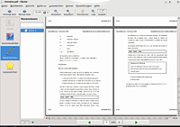
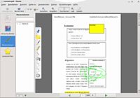

Okular
Dieser Artikel wurde für die folgenden Ubuntu-Versionen getestet:
Ubuntu 16.04 Xenial Xerus
Ubuntu 14.04 Trusty Tahr
Zum Verständnis dieses Artikels sind folgende Seiten hilfreich:
Okular  ist der Dokumentenbetrachter von KDE SC 4 (und damit Nachfolger von KPDF). Seine Entwicklung wurde im Rahmen des „Google Summer of Code“ 2005 begonnen. Okular sticht besonders durch seine – durch Plugins erweiterbare – Flexibilität sowie Funktionen wie eine Marker- und Kommentarfunktion hervor. In Verbindung mit Jovie können auch Texte „vorgelesen“ werden.
ist der Dokumentenbetrachter von KDE SC 4 (und damit Nachfolger von KPDF). Seine Entwicklung wurde im Rahmen des „Google Summer of Code“ 2005 begonnen. Okular sticht besonders durch seine – durch Plugins erweiterbare – Flexibilität sowie Funktionen wie eine Marker- und Kommentarfunktion hervor. In Verbindung mit Jovie können auch Texte „vorgelesen“ werden.
Ohne weitere Plugins unterstützt Okular die Dateiformate PDF, PS, ODF, DVI, diverse E-Book- sowie mehrere Grafikformate. Eine aktuelle Übersicht, welche Funktionen von welchem Format unterstützt werden, finden sich auf Document format handlers status .

Installation¶
Okular ist in der Standardinstallation von Kubuntu enthalten, kann aber ansonsten über das Paket
okular
 mit apturl
mit apturl
Paketliste zum Kopieren:
sudo apt-get install okular
sudo aptitude install okular
installiert [1] werden.
Für eine erweiterte Formatunterstützung kann zusätzlich das Paket
okular-extra-backends
mit apturl
Paketliste zum Kopieren:
sudo apt-get install okular-extra-backends
sudo aptitude install okular-extra-backends
installiert werden. So werden zusätzlich EPUB-, TIFF- und DjVu-Dateien unterstützt.
Benutzung¶
Okular wird über
"K-Menü -> Programme -> Grafik -> Dokumentenbetrachter (Okular)"
gestartet.
Die Bedienung von Okular ist in weiten Teilen selbsterklärend. Ein Dokument öffnet man über "Datei -> Öffnen". Über den Punkt "Datei -> Postscript als pdf importieren" kann man .ps-Dateien direkt in eine .pdf-Datei umwandeln und anschließend auch als .pdf speichern.

Im Menü "Extras" stehen ein Textauswahlwerkzeug ("Textauswahl" oder Strg + 4 sowie ein allgemeines Auswahlwerkzeug ("Auswahl" oder Strg + 3 ) zur Verfügung, das entweder Bilder und Text oder nur Bild wählt.
Anmerkungen (Rezensionen)¶
Okular bietet die Möglichkeit, Kommentare und Markierungen in Dokumenten zu hinterlassen. Dazu wählt man "Extras -Rezensionen" oder drückt
F6 . Neben dem Dokument wird jetzt ein Menü eingeblendet, das die diversen Werkzeuge zeigt. Zur Verfügung stehen unter anderem eine Haftnotiz, ein Textmarker, ein Stift, eine Unterstreichfunktion und Stempel. Mit "Einstellungen - Okular Einrichten" oder  auf dem Anmerkungen-Menü kann man u. a. die Farben und Stempel ändern.
auf dem Anmerkungen-Menü kann man u. a. die Farben und Stempel ändern.
Die Original-Dateien werden dabei nicht verändert, denn die Kommentare und Markierungen werden nicht direkt in der Datei gespeichert, sondern in einer externen xml-Datei mit dem Namen des PDF-Dokuments. Diese findet man im Ordner ~/.kde/share/apps/okular/docdata/. Dieser Ordner lässt sich ohne Probleme mit Hilfe eines Cloud-Dienstes synchronisieren. Das ermöglicht beispielsweise das Arbeiten an Dokumenten von mehreren Rechner aus, an allen Rechnern muss dafür das Dokument allerdings mit Okular bearbeitet werden.
Hinweis:
Da alle Änderungen zentral in einer xml-Datei mit dem entsprechenden Datei-Namen gespeichert sind, gelten sie für alle Dateien des selben Namens unabhängig vom Speicher-Ort.
Aus gleichem Grund gehen die Kommentare und Anmerkungen scheinbar verloren, wenn man eine Datei umbenennt. Macht man die Umbenennung rückgängig, sind die Anmerkungen und Kommentare wieder sichtbar.
Export als Dokumentarchiv¶
Seit Ubuntu 12.04 lassen sich die Markierungen und Anmerkungen über "Datei -Exportieren als -Dokumentarchiv" gesammelt in einer Datei speichern, diese kann nur mit Okular geöffnet werden.
Anmerkungen (Rezensionen) im Dokument speichern¶
Mit der seit Ubuntu 14.04 in den Paketquellen vorhandenen Version können Kommentare und Markierungen im PDF-Dokument abgespeichert und im Gegensatz zu früheren Version nicht nur mit Okular, sondern auch mit anderen PDF-Anzeigeprogrammen (z.B. PDF-XChange Viewer, Adobe Reader) angezeigt werden. Dazu wählt man "Datei -Speichern unter ..." oder drückt ⇧ + Strg + S .
Hinweis:
Mit "Datei -Kopie speichern unter ..." werden die Kommentare und Markierungen nicht in der neuen Datei gespeichert. Ändert man dabei den Namen der Datei, sodass dazu keine lokalen xml-Datei existiert, sind die Anmerkungen und Markierungen verschwunden.
Wenn man noch nicht veränderte PDF-Dokumente mit Anmerkungen versieht, wird man nicht darauf hingewiesen, dass man die Änderungen speichern muss, sie werden in der separaten xml-Datei gespeichert. Wenn das Dokument bereits Anmerkungen oder Markierungen hatte, wird man darauf hingewiesen, dass man die Änderungen speichern muss (inkl. Dialog beim Dokument schliessen).
Eigene Stempel definieren¶
Okular bietet die Möglichkeit, eigene Stempel zu definieren, die dann als Markierung ins Dokumment einfügt werden können.
Dazu muss man zuerst den gewünschten Text oder das gewünschte Bild als .png oder .svg Datei im Homeverzeichnis unter .kde/share/icons speichern, Dateinamen und Dateiendung dürfen ausschließlich aus Kleinbuchstaben bestehen. Sollte das Verzeichnis nicht existieren, dann muss man es vorher noch anlegen.
Danach wählt man das Menü "Einstellungen -> Anmerkungen einrichten" und dort "Hinzufügen -> Typ:Stempel". Im oberen Feld kann man einen eigenen, frei wählbaren Namen eingeben, im unteren Feld unter "Stempel Symbol" gibt man den Namen der zuvor gespeichert Stempeldatei ein. Findet Okular diese, wird eine Vorschau rechts neben der Eingabe angezeigt. Mit einem Klick auf "Ok" ist der eigene Stempel angelegt und einsatzbereit. Im Menü mit den Werkzeugen wird der Stempel jetzt angezeigt.
Möchte man die Vorgabegröße des Stempels ändern, so öffnet man im Homeverzeichnis die Datei .kde/share/config/okularpartrc [3] und sucht im Abschnitt "[Revisions]" den Eintrag für den eigenen Stempel. Über die Zahl hinter dem Eintrag "size=" wird die Größe geändert.
Präsentationsmodus¶
Für mehrseitige Dokumente besitzt Okular einen Präsentationsmodus, ähnlich dem von LibreOffice Impress oder PowerPoint. Diesen Modus startet man über "Ansicht -> Präsentation" oder Strg + ⇧ + P . Die einzelnen Seiten des Dokuments werden in diesem Modus im Vollbildmodus angezeigt, rechts oben wird per Icon dargestellt, auf welcher Seitennummer man sich befindet und wieviel von der Präsentation schon gezeigt wurde. Vor oder Zurück blättert man entweder mit den Cursor- oder Maustasten. Unter "Einstellungen -> Präsentation" kann festgelegt werden:
ob die Präsentation automatisch ablaufen soll und wie schnell weitergeblättert werden soll,
ob und welche Präsentationseffekte benutzt werden sollen,
auf welchem Monitor die Präsentation erscheinen soll.
Fährt man mit der Maus an den oberen Bildschirmrand, erscheint eine Werkzeugleiste. Nach einem  auf den Stift kann in der Präsentation gezeichnet werden, ein auf den Radiergummi löscht die Zeichnung wieder.
auf den Stift kann in der Präsentation gezeichnet werden, ein auf den Radiergummi löscht die Zeichnung wieder.
Formulare¶
Ist die Standardbibliothek zur Darstellung von PDF-Dokumenten poppler-utils ab Version 0.8 installiert, erscheint am oberen Rand des Dokumentbereichs ein entsprechender Hinweis mit der Schaltfläche "Formulare anzeigen", wenn es sich bei dem geöffneten Dokument um ein ausfüllbares Formular handelt. Nachdem diese Schaltfläche gedrückt wurde, werden Formularfelder eingeblendet, die ausgefüllt werden können, und der Text der Schaltfläche ändert sich in "Formulare ausblenden". Wird die Schaltfläche erneut gedrückt, werden die eingegebenen Daten im Dokument angezeigt und können gedruckt werden.
Ist die Standardbibliothek zur Darstellung von PDF-Dokumenten poppler-utils ab Version 0.22 installiert, können die eingegebenen Daten auch im Formular gespeichert werden, wenn dies in dem Dokument nicht durch DRM verboten wurde.
Wenn in dem Formular JavaScript oder Flash eingesetzt werden, wird das Dokument zwar von Okular als Formular erkannt, es werden aber aus Sicherheitsgründen keine ausfüllbaren Felder angezeigt.
Problembehebung¶
Da Okular als Fenstertitel den Dokumententitel verwendet und einige PDF-Dateien falsche bzw. sehr ähnliche oder gleiche Titel verwenden, ist es unter Umständen besser, den Dateinamen als „Window title“ anzuzeigen. Dieses Verhalten kann entweder spätestens ab Version 0.14.2 in Okuluar selbst unter "settings/configure Okular/General/Display document title in title bar" oder wie hier beschrieben durch folgendes Kommando in der Shell erreicht werden [2]:
kwriteconfig --file okularpartrc --group General --key DisplayDocumentTitle --type bool false
 Übersichtsartikel
Übersichtsartikel- Erstellt mit Inyoka
-
 2004 – 2017 ubuntuusers.de • Einige Rechte vorbehalten
2004 – 2017 ubuntuusers.de • Einige Rechte vorbehalten
Lizenz • Kontakt • Datenschutz • Impressum • Serverstatus -
Serverhousing gespendet von